項目 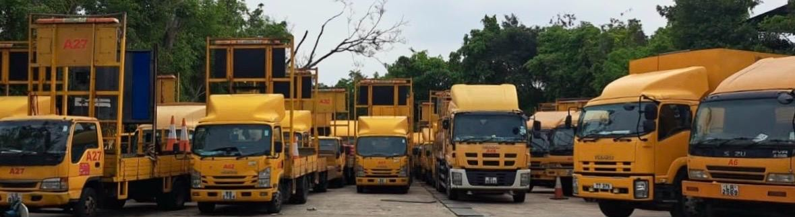 華丰曾參與的路政署及渠務署定期合約，以及大型盛事封路工程如下。 大型盛事 大型盛事：渣打香港馬拉松及單車節封路 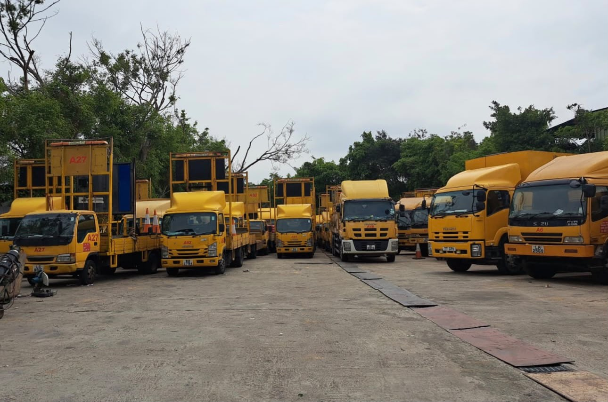 03/HY/2023 路政署定期合約（沙田、西貢及離島區道路（快速公路及高速道路除外）之管理及維修，2024 – 2029） 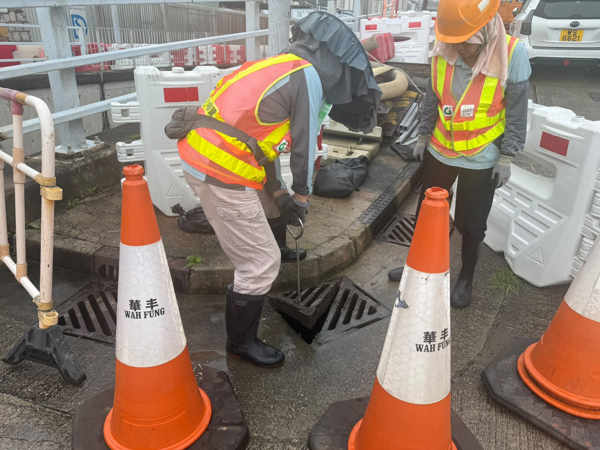 DC/2023/04 渠務署定期合約（九龍及新界南區的渠務維修及建造工程，2023 – 2027） 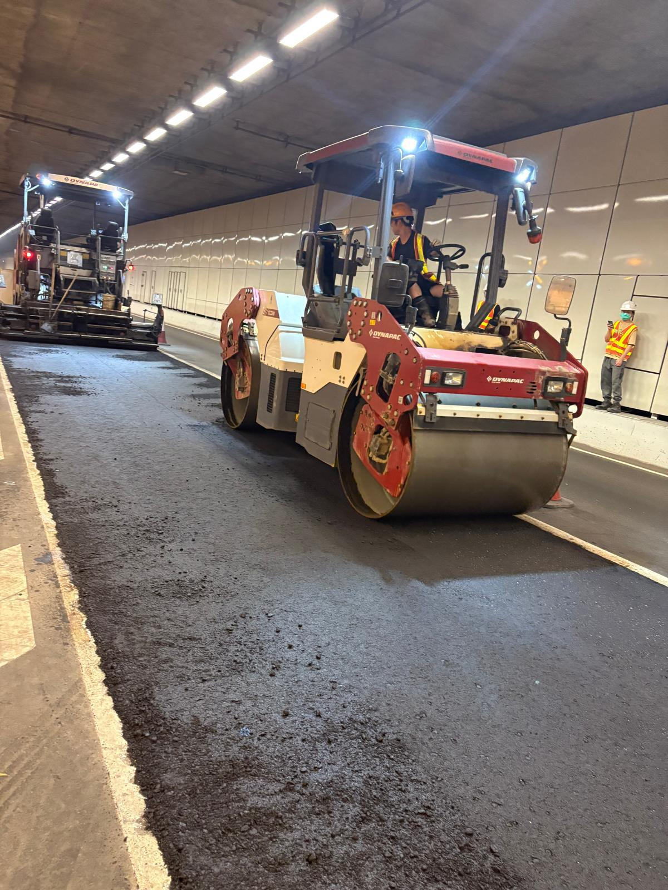 18/HY/2020 路政署定期合約（香港島道路（快速公路及高速道路除外）之管理及維修，2021 – 2025） 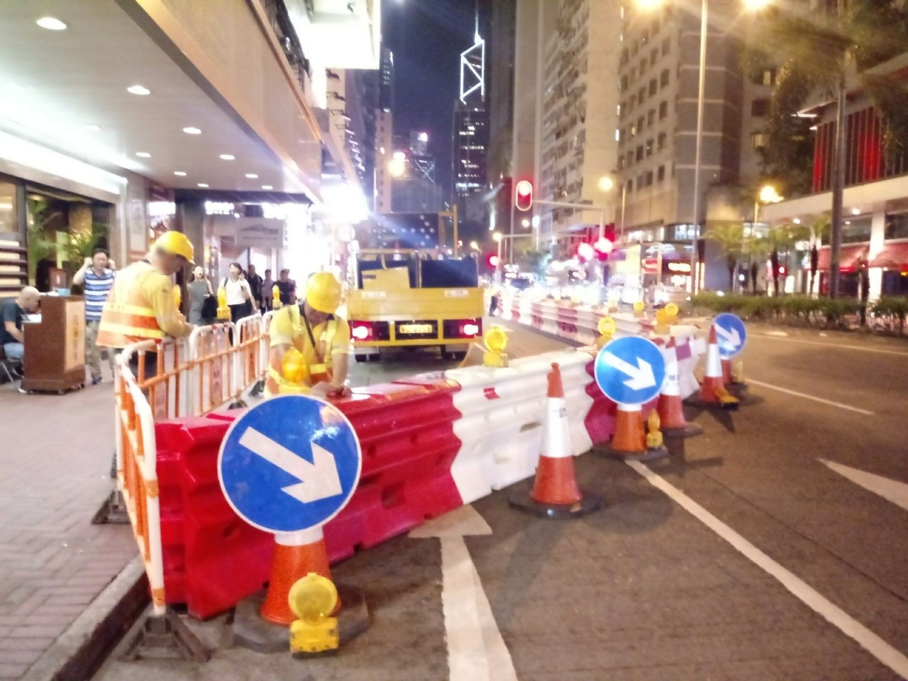 01/HY/2016 路政署定期合約（香港島道路（快速公路除外）之管理及維修，2017 – 2023） 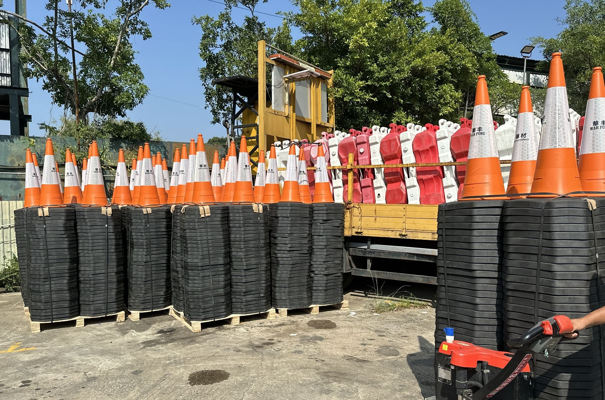 02/HY/2015 路政署定期合約（大埔及北區道路（快速公路除外）之管理及維修，2016 – 2022） 06/HY/2011 路政署定期合約（大埔及北區道路（快速公路除外）之管理及維修，2012 – 2016） 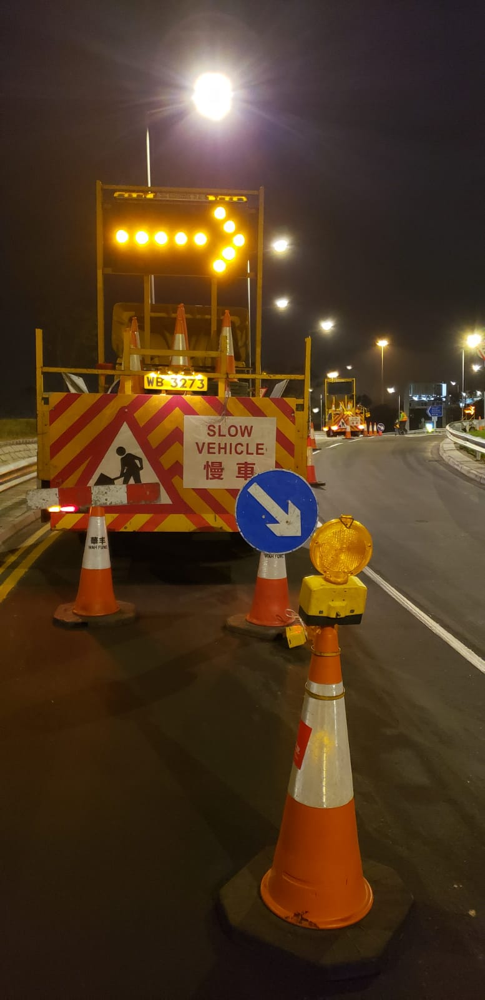 11/HY/2007 路政署定期合約（新界西及九龍快速公路及香港口岸區道路之管理及維修，2008 – 2016） 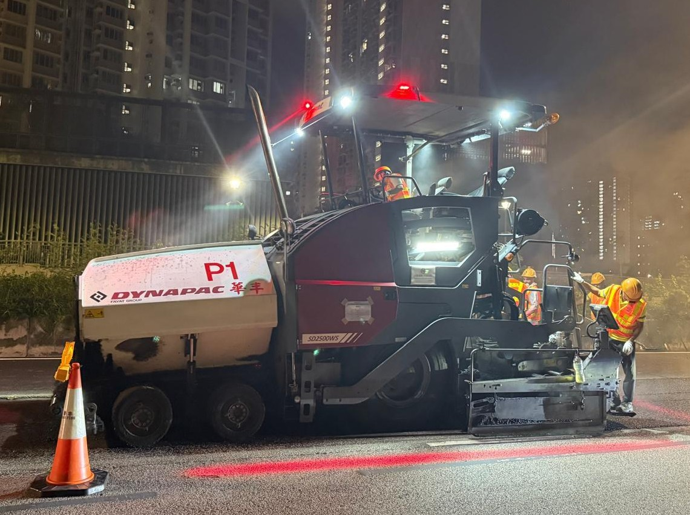 05/HY/2006 路政署定期合約（大埔及北區道路（快速公路除外）之管理及維修，2007 – 2012） 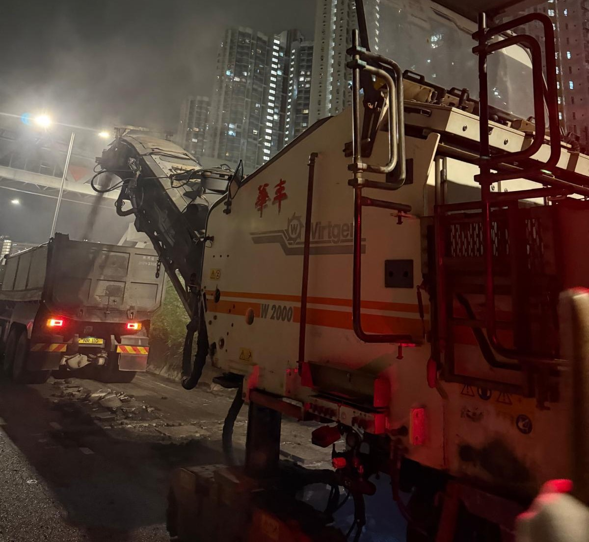 16/HY/2003 路政署定期合約（新界西及九龍快速公路之維修，2004 – 2008） 08/HY/2001 路政署定期合約（屯門及元朗區道路之管理及維修，2002 – 2005） 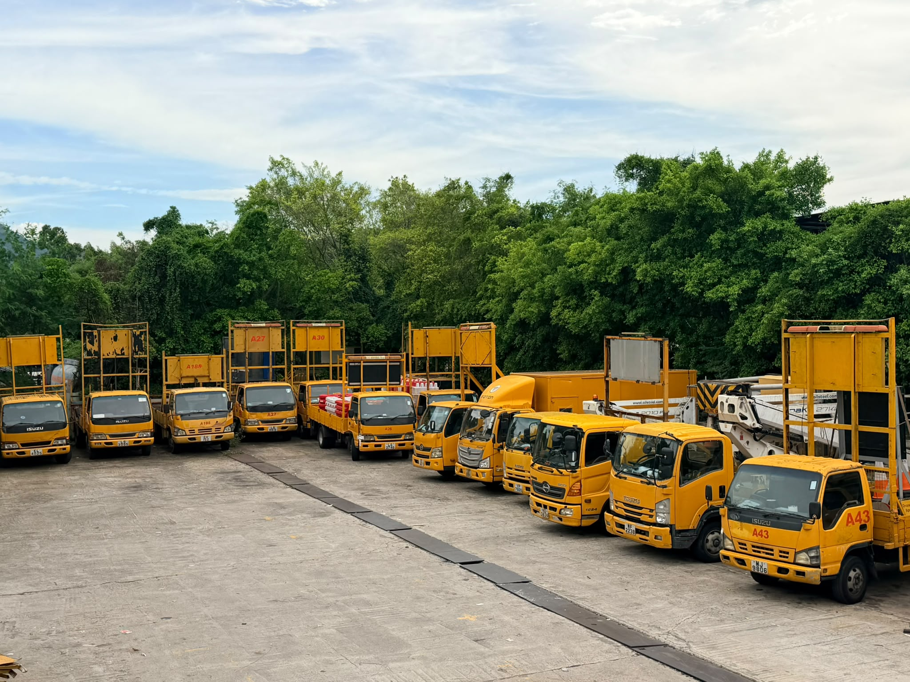 11/HY/2000 路政署定期合約（新界西及九龍快速公路之維修，2001 – 2004） 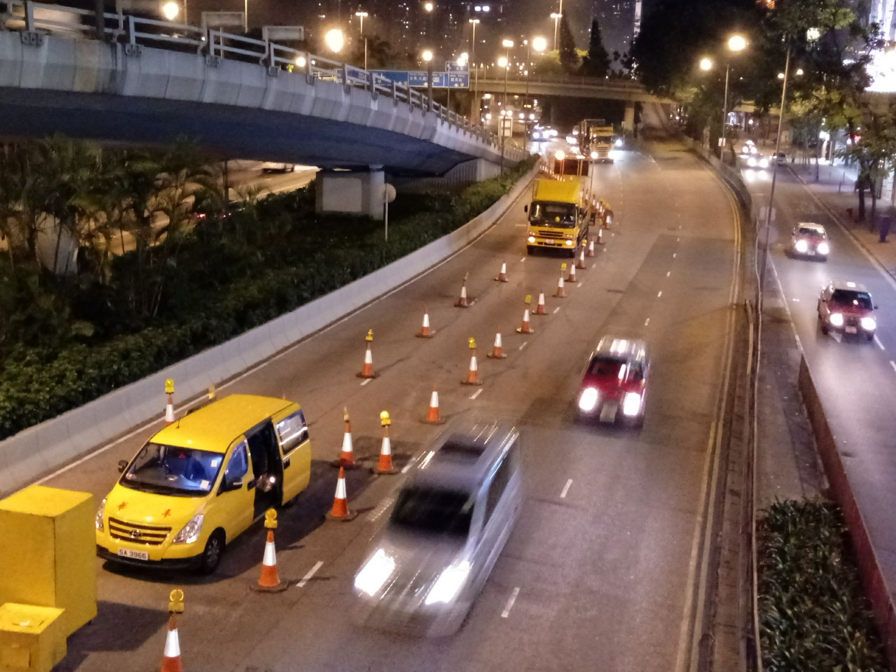 10/HY/1997 路政署定期合約（新界西及九龍快速公路之維修，1998 – 2001）